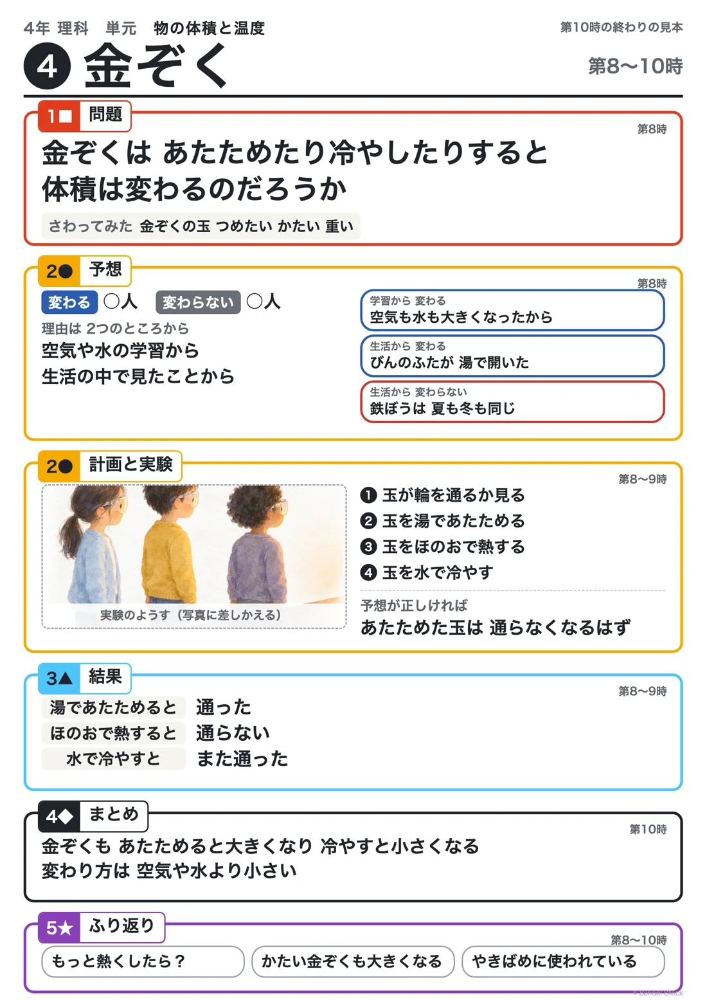

Board
板書計画

PDFでひらく編集用ファイルマス目プリントメーカー
Notebook
児童のノート

配るノート（PDF）記入例（PDF）
Aim
主眼
金ぞくは、あたためたり冷やしたりすると体積は変わるのかという問題について、空気・水・金属の結果を比べてまとめる活動を通して、変わり方のちがいも含めた結論を導き出し、レールのすきまや焼きばめから、学んだことが生活の中で生かされていることに気づくことができる。
Assessment
評価規準
| 観点 | 評価規準 | 方法 |
|---|---|---|
| 知識・技能 | 金属、水及び空気は、あたためたり冷やしたりすると体積が変わるが、その程度に違いがあることを理解している。 | ノート・発言 |
| 主体的に学習に取り組む態度 | レールのすきまや焼きばめについて、学んだことを生活に生かそうとしている。 | 発言・ノート |
Flow
学習活動と指導上の留意点
| 配時 | 学習活動 | 指導上の留意点 |
|---|---|---|
| 5分 | １ 問題と予想、前の時間の結果をふり返る。 | 〇 本時（第8時）と第9時の板書の写真を見せる。 |
| 15分 | ２ 空気・水・金ぞくの結果を表にならべてくらべる。 | 〇 表のますは、子どもに言わせてから書く。 〇 変わり方の大きさを、空気、水、金ぞくの順にならべさせ、「だから金ぞくは湯では分からなかった」という考えを取り上げる。 |
| 25分 | ３ 考察と結論を書き、生活とのつながりを考える。 （１）はじめの問題に答える。 （２）レールのすきまと焼きばめのわけを考える。 | 〇 問題に正対した結論を書かせ、分類表の金ぞくに結果を書きこむ。 〇 学んだことが生活に生かされていることに気づかせるために、レールのつなぎ目のすきまと焼きばめの図や写真を見せ、わけを説明させる。 〇 木やプラスチックもわずかに変わることを、程度のちがいとして伝える。 |
配時は45分の目安です。
Learning trail
学びの足あとの想定

More
そのほかの情報
電子黒板に映す問い・発問と反応・実験と安全・まとめ・資料・メモ（ひらく）
電子黒板に映す問い
空気・水・金ぞくの体積の変わり方には、どんなちがいがあるのだろう
おもな発問
- 3つの実験の結果をならべると、どんなことが言えるかな。
- 体積の変わり方が大きい順にならべよう。
- レールのつなぎ目にすきまをあけているのは、なぜだろう。
- 焼きばめでは、なぜ輪を熱してからはめるのだろう。
予想される児童の反応
- どれも、あたためると体積が大きくなり、冷やすと小さくなる。
- 空気がいちばん大きく変わって、金ぞくはほんの少し。
- 夏にレールが大きくなっても、ぶつからないようにしている。
- 輪を熱して大きくしてからはめて、冷えると小さくなってぴったり止まる。
まとめの例
金ぞくも、あたためると体積が大きくなり、冷やすと小さくなる。変わり方は空気がいちばん大きく、次に水、金ぞくはとても小さい。
次の問い
物をあたためると、熱はどのように伝わっていくのだろう（次の単元「物のあたたまり方」）。
着眼１の目指す児童の姿（第３次）
根拠を基に「金ぞくも、あたためると体積が大きくなり、冷やすと小さくなる」という妥当な結論を導き出し、表現している。 焼きばめの事例について知り、科学によって私たちの生活が支えられていることに気づき、表現している。
メモ
- 生かすは焼きばめ（指導案の着眼１）。本時で見せたレールのつなぎ目のすきまも、ここで理由を説明できるようにする。